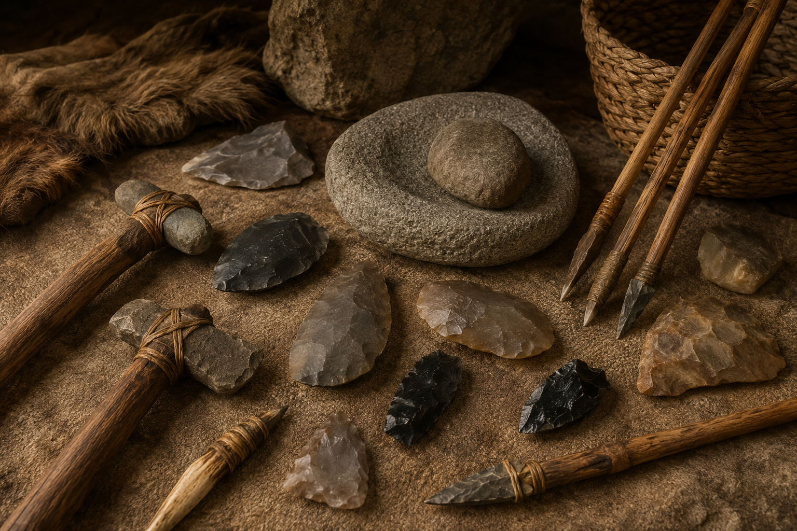

01STONE TOOLS
Early tools that changed how humans processed materials and survived.
A JOURNEY THROUGH HUMAN HISTORY
Explore the inventions, discoveries and ideas that transformed humanity — from the first stone tools to artificial intelligence.
WELCOME TO THE MUSEUM
Travel through time and discover how human creativity, curiosity and invention shaped the world around us. Each collection represents a different chapter in our journey.
EXPLORE THE COLLECTIONS
The age when humanity first learned to create, survive and imagine.
Enter Collection →Cities, writing, mathematics and monumental ideas shaped the ancient world.
Enter Collection →Steam, factories and machines transformed how people worked and traveled.
Enter Collection →Electricity, medicine, aviation and communication reshaped everyday life.
Enter Collection →From the first satellites to the Moon and beyond, humanity explored the cosmos.
Enter Collection →Computers, networks and artificial intelligence are reshaping the future.
Enter Collection →A TIMELINE OF DISCOVERY
Early humans began using stone tools to cut, break and process materials.
Cuneiform became one of the earliest known writing systems.
Ancient civilizations created enormous structures through planning and engineering.
Steam power and machines began transforming manufacturing and transportation.
Powered aircraft opened a new chapter in transportation.
The first artificial satellite marked the beginning of the space age.
The Apollo era demonstrated that humans could travel beyond Earth.
The Web connected documents and information across the Internet.
Modern AI systems recognize patterns, generate content and assist with complex tasks.
THE GALLERY

01Early tools that changed how humans processed materials and survived.
 02
02
One of the earliest writing systems, created by pressing wedge-shaped marks into clay.
 03
03
Steam power provided mechanical energy for mines, factories and transportation.
A communication technology that allowed people to speak across long distances.
 05
05
A fundamental building block of modern electronics and digital technology.
 06
06
The Apollo spacecraft that carried astronauts between lunar orbit and the Moon's surface.
 07
07
Robotic explorers that study rocks, soil and the ancient environment of Mars.
 08
08
Modern computing systems capable of recognizing patterns and generating content.
COLLECTION 01 • THE BEGINNING
The age when humanity first learned to create, survive and imagine.
THE STORY
Long before written history, early humans developed tools, controlled fire, created art and formed communities. Prehistory is the story of the first great steps toward civilization.
THE COLLECTION
The earliest known stone tools gave early humans a powerful new way to cut, break and process materials.
Fire provided warmth and protection while also allowing humans to cook food and gather around a shared source of light.
Prehistoric artists painted animals, symbols and scenes on cave walls, leaving behind some of humanity's earliest visual stories.
The development of agriculture changed human life by encouraging permanent settlements and larger communities.
COLLECTION 02 • FOUNDATIONS OF CIVILIZATION
Cities, writing, mathematics and monumental ideas shaped the ancient world.
THE STORY
The ancient world saw the rise of organized cities, governments, writing systems and extraordinary architecture. Civilizations across Africa, Asia, Europe and the Americas created ideas that continue to influence us today.
THE COLLECTION
One of the earliest writing systems used wedge-shaped marks pressed into clay to record information.
The monumental pyramids of ancient Egypt demonstrate extraordinary planning, engineering and organization.
A plant-based writing material helped Egyptian administrators, scholars and scribes preserve information.
Early magnetic technology eventually contributed to one of history's most important navigation inventions.
COLLECTION 03 • MACHINES CHANGE THE WORLD
Steam, factories and machines transformed how people worked and traveled.
THE STORY
Beginning in the 18th century, industrialization introduced machines and new manufacturing systems on an unprecedented scale. It changed cities, transportation, communication, work and everyday life.
THE COLLECTION
Improved steam engines provided mechanical power for mines, factories and transportation.
New textile machines dramatically increased the speed and scale of cloth production.
Railways connected cities and communities while making long-distance travel faster.
Electrical telegraphy allowed messages to travel across great distances far faster than physical transport.
COLLECTION 04 • THE MODERN WORLD
Electricity, medicine, aviation and communication reshaped everyday human life.
THE STORY
The 20th century brought an extraordinary acceleration of scientific and technological progress. New forms of energy, transportation, medicine and communication changed how billions of people live.
THE COLLECTION
Telephones transformed personal communication by allowing people to speak across long distances.
Powered flight changed global travel and made it possible to cross continents and oceans in hours.
The discovery and development of antibiotics transformed the treatment of many bacterial infections.
The transistor became a fundamental building block of modern electronics and later digital technology.
COLLECTION 05 • BEYOND EARTH
From the first satellites to the Moon and beyond, humanity began exploring the cosmos.
THE STORY
Space exploration expanded the boundaries of human knowledge. Satellites, robotic spacecraft and crewed missions allowed us to study planets, stars and the environment around Earth.
THE COLLECTION
The first artificial satellite marked the beginning of the space age and demonstrated that objects could orbit Earth.
Space suits protect astronauts from the harsh environment of space while allowing them to work outside a spacecraft.
The Apollo lunar module carried astronauts from lunar orbit to the Moon's surface and back.
Robotic rovers have explored the Martian surface, studying rocks, soil and the planet's ancient environment.
COLLECTION 06 • THE CONNECTED WORLD
Computers, networks and artificial intelligence are reshaping the future.
THE STORY
The digital revolution transformed information from something stored mainly on paper into something that can be processed, copied and shared almost instantly. Computing now touches nearly every part of modern life.
THE COLLECTION
Early electronic computers demonstrated that machines could process complex calculations at remarkable speed.
The microprocessor placed the central processing functions of a computer onto a compact chip.
The Web made it possible to connect documents and information through a system accessible across the Internet.
Modern AI systems can recognize patterns, generate content and assist with increasingly complex tasks.
ABOUT THE PROJECT
Digital Museum is an educational journey through major stages of human innovation. It brings history, technology and discovery together in one interactive website.